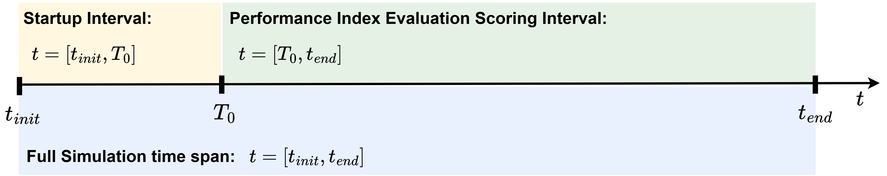

Writing Your Controller¶
Each participant must implement their control algorithm in a Python file (by default, my_controller.py).
This file defines the control strategy executed by the WAPPAC simulator.
The controller’s goal is to maximize the performance index \(\mathcal{G}\) over the scoring interval \(t \in [T_0, t_{end}]\) by defining the control force \(F_{pto}(t)\) appropriately for all three sea-state scenarios:
For more details, see Control Problem Definition.
Controller Function Interface¶
Your controller must define the following function:
def my_controller(x, v, t, eta10):
# Your control logic here defining F_pto for the current time-step
return F_pto
Note
You may rename the Python file differently, but the function name must remain my_controller.
Function Arguments¶
Variable |
Type |
Description |
|---|---|---|
|
float |
Sail position [m] |
|
float |
Sail velocity [m/s] |
|
float |
Current simulation time [s] |
|
float |
10 m up-wave surface elevation [m] (measured at \(x=-10\) m) |
Function Output¶
Variable |
Type |
Description |
|---|---|---|
|
float |
Control force [N] applied by the PTO system |
Using External Packages¶
Participants may include custom or third-party Python packages by placing them in the dedicated folder:
WAPPAC_distribution/
├── my_controller.py
├── external_packages/
│ └── [your custom packages here]
Important: The folder name must remain exactly
external_packages/. WAPPAC automatically searches this directory at runtime to make its contents importable by your controller.
Installing a Custom Package Locally¶
You can install a package directly into the external_packages folder:
python -m pip install --target ./external_packages control
This installs the package (e.g. control) locally without requiring system-wide installation.
You can then import it normally:
import control # loaded from external_packages
def my_controller(x, v, t, eta10):
# Control logic using the 'control' package
return F_pto
If your controller depends on additional packages, include a requirements.txt file in your submission.
See Submission Guidelines for details.
Including Auxiliary Controller Modules¶
If your implementation uses additional local modules (other Python scripts), include them alongside my_controller.py.
Important
A dedicated folder named control_helpers/ (or similar) is optional but strongly encouraged to organize all auxiliary controller-related files (e.g., parameter definitions, sub-functions, or model abstractions).
WAPPAC_distribution/
├── external_packages/
│ └── [your custom packages here]
├── my_controller.py
├── control_helpers/
├── my_filters.py
├── my_optimizer.py
└── helper_functions.py
All import paths should refer to this folder, e.g.:
from control_helpers.my_filters import moving_average
import control # loaded from external_packages
def my_controller(x, v, t, eta10):
# Control logic using the 'control' package and 'my_filters' module
return F_pto
Make sure all file paths and imports are relative and self-contained — no absolute or OS-specific paths or online resources should be present.
Allowed and Restricted Features¶
The controller executes inside a controlled runtime to ensure safety, fairness, and reproducibility across participants. The environment is intentionally simple and deterministic, but still flexible for control design.
✅ Allowed¶
Standard Python syntax, arithmetic, and logical operations.
Imports from:
Core Python libraries (
math,json,random,os, etc.).Common scientific libraries — the following are already bundled inside WAPPAC binaries, so there is no need to re-install them:
torch==2.8.0+cpu torchdiffeq==0.2.5 numpy==2.3.3 scipy==1.16.2 matplotlib==3.10.6
Additional pure-Python modules placed in
external_packages/, provided they:do not rely on GPU computation or system-level privileges, and
run fully offline (no internet access required).
Internal helper functions, persistent variables (within a single run), and lightweight data structures.
Optional initialization or pre-computed constants at file start.
⚠️ Restricted (and why)¶
Restrictions are minimal and guided by the underlying WAPPAC simulation platform design. They are intended to guarantee consistent benchmarking rather than limit creativity! If you believe a reasonable use case requires exception, please contact the WAPPAC support team (see Support & Contact).
Restriction |
Technical Rationale |
|---|---|
External file I/O (beyond the provided folders) |
Keeps results reproducible. All input/output should occur through |
GPU or CUDA calls |
Evaluations run on CPU for reproducibility and cross-platform consistency. The bundled Torch build is CPU-only. |
External network or API calls (HTTP, sockets, etc.) |
Ensures offline, deterministic, and fair evaluation. Official evaluation re-runs will be executed in a network-isolated environment; any code relying on networks will fail or be rejected. This is a policy + operational restriction. |
Dynamic package installation during runtime ( |
While participants can include extra packages in |
Modification of internal WAPPAC modules |
Physics models, solvers, and evaluation logic are locked to ensure all participants run under identical conditions. |
Key Controller Design Considerations¶
Participants should consider the following aspects when developing their control law. See related documentation for more detail.
{kind=link}

Figure 10 Key time intervals for performance evaluation.¶
Controller Definition¶
Important
Your control law (my_controller) must be defined for the entire simulation duration (\(t \ge 0\)), even though the performance index is computed only during the scoring interval.
Evaluation Criteria¶
Important
Performance Index (\(\mathcal{G}\)): evaluated during the scoring interval (\(t \ge T_0 = 30\) s).
Passivity constraint: \(p_{pto} \ge 0\) must hold for the full simulation.
See Evaluation Criteria & Competition Rules for a complete description.
Evaluation Mode — Controller Adaptation Requirement¶
During Evaluation Mode (eval_flag = true), the WAPPAC platform executes the three official sea-state scenarios (wave_id = 1–3) in a aleatory order.
Controllers do not receive any prior information about which sea state is being simulated and should therefore adapt adequately to the prevailing conditions.
Participants are encouraged to verify controller robustness under unknown sea states by running equivalent randomized tests in development mode (eval_flag = false).
This capability is essential for achieving a consistent and high performance index across all evaluation cases.
Startup Ramp¶
The wave excitation force is introduced smoothly through a raised-cosine ramp:
where \(ramp(T_{ramp}=20)=1\). Refer to Numerical Implementation for further details.
Important
Ramp duration is fixed to \(\mathbf{T_{ramp}} = 20\) s for all simulations across the three sea states scenarios.
Control Update Scheme (Zero-Order Hold)¶
The control force is updated at the beginning of each simulation time step (\(\Delta t = 0.05\ \text{s}\)). Internally, the solver performs Runge–Kutta (RK4) sub-steps while holding the control force constant (Zero-Order Hold). See WavePiston Dynamics Numerical Integration for implementation details.
Handling Up-Wave Data (eta10)¶
The signal eta10 (10 m up-wave surface elevation) is available only during the scoring interval.
For \(t < 30\) s, eta10 = NaN. Your controller must handle this robustly.
Example:
def my_controller(x, v, t, eta10):
if not np.isnan(eta10):
# Optional preview or estimation logic
pass
# Example: proportional-velocity control
F_pto = 1e6 * v
return F_pto
✅ Summary¶
Implement your control in a Python function named
my_controller.Ensure numerical stability and satisfaction of the passivity constraint (\(p_{pto} \ge 0\)) throughout the full simulation time span.
Use the provided inputs (
x,v,t,eta10) for designing your control law.External packages may be included via
external_packages/and a list of them submitted later asrequirements.txt.The controller should adapt effectively to the three sea-state scenarios simulated in aleatory order during evaluation mode.